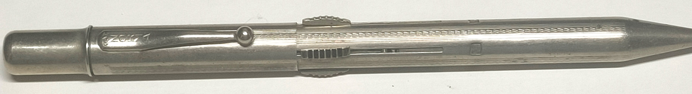
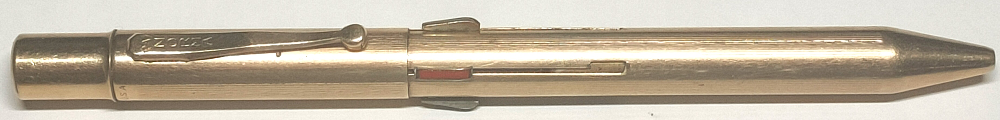
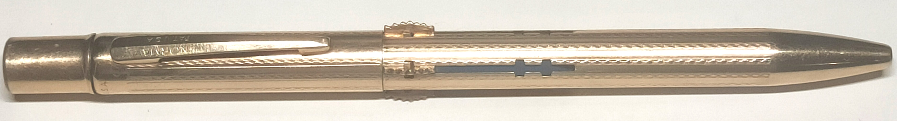

Norma Multikolor Mehrfarbstifte
Norma Pencil Corporation USA
Im Zusammenhang mit Norma USA wird meist Roger Russel genannt. Dieser ist 2021 verstorben und seine Webseite teils offline. Die archivierte Seite finden Sie hier.Nicht alle Informationen dort stimmen. Dennoch lohnt sich der Besuch, um über die Minen, Radierer, oder Varianten zu erfahren.
Die Geschichte von Norma USA
Um die 1930er Jahre entsteht die Norma Multikolor, Inc. in New York, USA.Sie scheint dem Namen nach speziell für Mehrfarbstifte gegründet worden zu sein, was damals häufiger vorkam.
Für diese reichte Hans Maucher Patente ein, die verschiedene Mechanismen betrafen.
Welche Art von Beziehung die Norma Multikolor mit den Gebrüdern Fend oder Albert Hirth hatte, ist ungeklärt.
Um 1950 wurde die Norma Multikolor Inc. zur Norma Pencil Corporation umbenannt und hatte die Adresse "Norma Building, 137 West 14th Street, New York 11, N.Y".
1967 endet die Firmengeschichte.
Vom Mechanismus her wurden nie große Neuheiten geschaffen. Allein Fend besaß Stiftmodelle mit jedem der hiernach vorgestellten Prinzipien.
Doch die Norma Multikolor schaffte es, die bekannten Ideen in edle Hüllen zu packen, die unsere Aufmerksamkeit verdienen.
1935 Das erste Modell US2067455
 Das Arretierungsprinzip ist identisch dem Norma von Fend bzw. Albert Hirth.Der Minenhalter schnappt mit seiner Rastzunge in die Öffnung unterhalb seines Führungsschlitzes und wird beim Wieder-Eindrücken der Zunge von einer Druckfeder in Ausgangsstellung befördert.
1936 Das zweite Modell US2108441
 Diese Feststellung nennt man Bayonett-Verschluss. Der Schieber wird nach unten und dann seitlich in die Kurve geschoben. Das Zurückschieben in den geraden Schieberweg lässt den Schieber auch hier durch eine Druckfeder in die Ausgangsstellung zurückschnellen.1940 Das dritte Modell US2259649
 Ich nenne diesen Typ von Mechanismus 'Blattfeder-Schieber-Mechanismus'.Der Schieber wird mittels einer Blattfeder seines Minenhalters aus dem Schieberschlitz gedrückt. Wichtig ist die Form des Schiebers: Mittig besitzt er eine Verbreiterung, welche eine Rastposition mit einem der Querschlitze im Schieberschlitz bildet.
Erst durch Herunterdrücken des Schiebers verschwindet die Verbreiterung im Stiftkörper, sodass der Schieber frei manuell auf und ab geschoben werden kann, um eine beliebige andere Rastposition einzunehmen oder kurzzeitig den Minenhalter besonders weit vorzuschieben, damit der Minenhalter besser gefasst und zum Vorschub der Mine gedreht werden kann.
Die dritte Version war die finale und wurde am stärksten beworben.
Varianten gab es in 3- und 4-farbig, mit Kugelschreibermine (deren Spitze man zum Nachfüllen von Tinte abnehmen konnte), und in verschiedenen Materialien.
So existierte neben verchromten, versilberten und vergoldeten Oberflächen auch Stifte, die vollständig aus 92,5%-Silber, Gold oder Monel bestanden.
Es sollte mit einem eigenen edlen Norma-Koffer zum Sammeln aller Varianten angeregt werden.